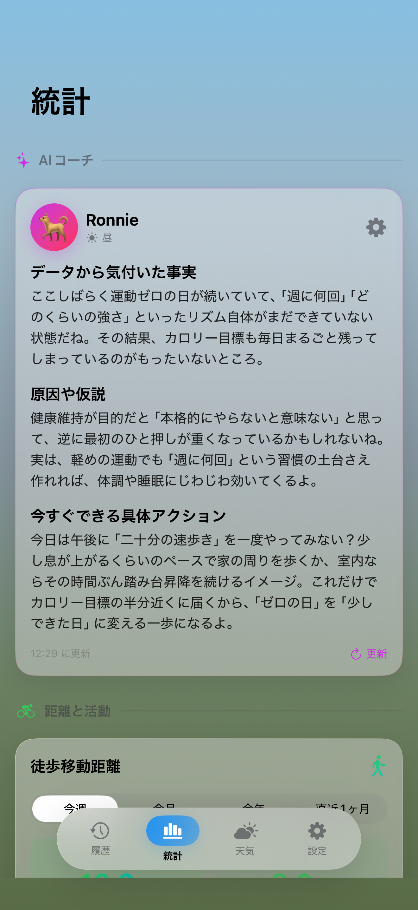
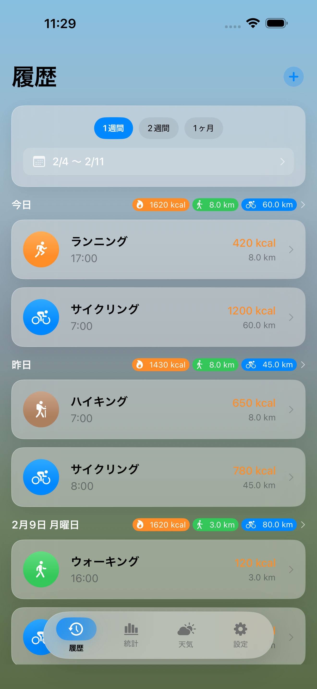
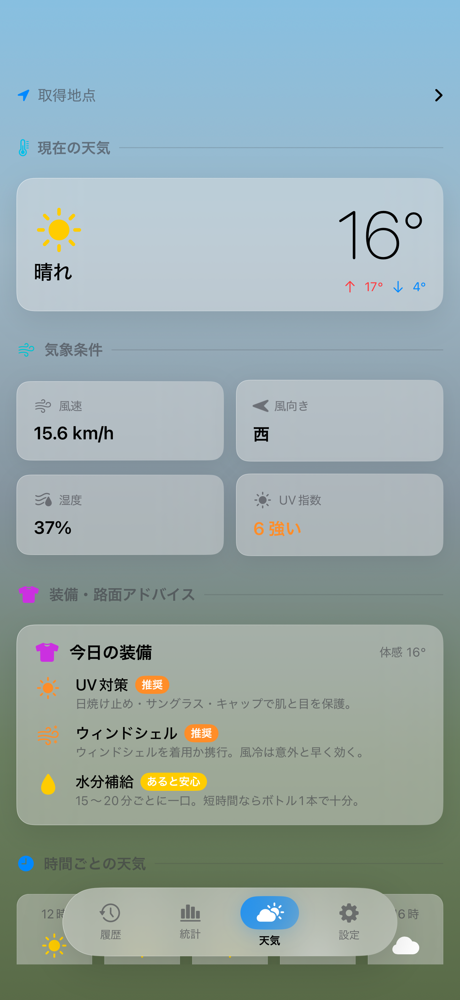

HealthKit のワークアウトをルート・標高・心拍・天気と一緒に振り返り、AI コーチが今のあなたに合わせたアドバイスを返します。ストリークと週次・月次グラフで、続けている実感も見えてきます。



HealthKit にはワークアウトが積み上がっていきます。けれど純正の画面では「今週はどう動けたか」「続けられているか」が読み取りにくい。Cranq は、そこを引き受けます。
距離・時間・カロリーが並ぶだけ。今日のライドが、自分の中で意味を持たない。
先週から今週、先月から今月、どれだけ続けられたか。リストを遡らないと分からない。
距離を伸ばすか、ペースを落とすか、休むか。判断材料は揃っているのに、自分ひとりでは繋げにくい。
HealthKit のワークアウトを読み込み、距離・標高・心拍・天気を 1 つの画面にまとめます。週次・月次のチャートで継続がそのまま見えてきます。
GPS で記録し、グラフで振り返り、AI コーチにフィードバックをもらう。3 つのステップが滑らかに繋がります。
走ったルート、登った標高、当日の天気まで HealthKit と連動して自動取得。
週次・月次のチャートで、距離も標高も心拍も一望。続いた日数がそのまま自信になります。
自分の OpenAI API キーを設定すると、AI コーチがあなたのワークアウトを読んでフィードバックを返します。
Cranq は Apple 純正の HealthKit と双方向に繋がります。Apple Watch のワークアウトも、サードパーティのアプリで取った記録も、同じ場所に集まります。
毎日の小さな一歩を、ホーム画面・通知・AI コーチが後押し。続いていることが、いちばんの励みになります。
連続して動けた日数を記録。今日も 1 日延ばせるかどうかが、続ける動機になります。
今週のサマリーをホーム画面に常駐。アプリを開かずに進捗を確認できます。
OpenAI の API キーを設定すると、AI コーチがあなたのワークアウトを読んでフィードバックを返します。気軽に相談できる伴走者として使えます。
Cranq は無料で使えます。HealthKit のデータは端末を離れず、AI コーチを使うときだけあなた自身の OpenAI API キーが裏で働きます。
ワークアウトデータは HealthKit に留まり、Cranq のサーバーには送信しません。
OpenAI への通信は端末から直接。Cranq の中継サーバーは存在しません。
サブスクも追加課金もありません。AI コーチを使う場合のみ、自分の OpenAI キー側で従量課金が発生します。